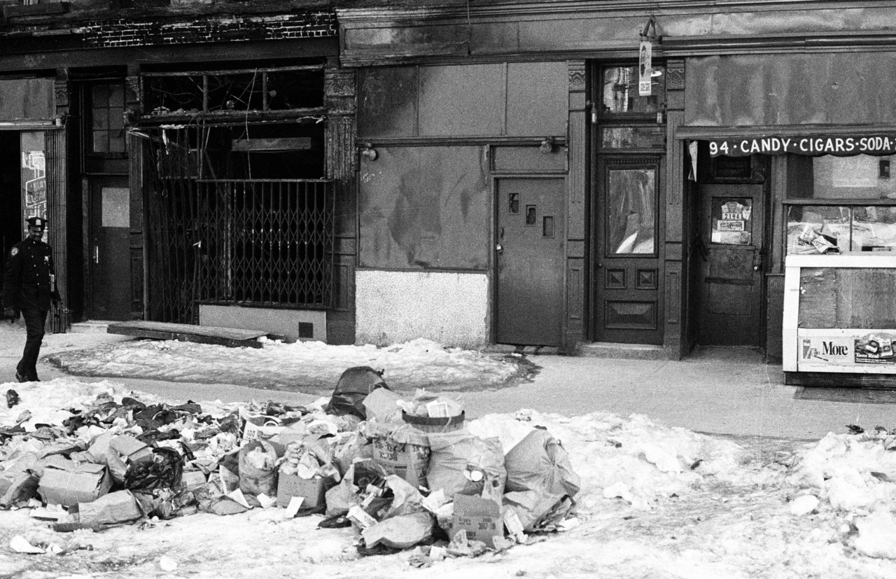

Tompkins Square Park, 1980

Football in the South Bronx, 1977
Tompkins Square Park, 1980
Football in the South Bronx, 1977

Broadway, near the Ed Sullivan Theater (later home to David Letterman)
Columbus Circle, 1970s
Mulberry and Houston, 1979

Stealing seats from Yankee Stadium, just before the 1973 renovation
York and Jay Streets in Brooklyn, just over the Manhattan Bridge, 1970

47th Street, 1978

Checker cab and cops, 1978

Times Square, 1974

Front Street and the Brooklyn Bridge, 1977
Empire Diner, 1970s

Carnegie Hall, 1971

86th and 2nd, 1960s

Hotel Opera, 1978, Upper West Side
Times Square, 2001

Photo by Anthony Barboza, ca. 1975
Seating outside Chock Full O Nuts

44th Street High. John Denver, 1973
47th Street, 1983
Tagged up station

The Downtown Crew

Beastie Boys, photographed by Glen E. Friedman in New York, 1986. culture

Washington Square Park, 1983

Morningside Drive and 118th Street, 1973
Broadway and 92nd, 1986
By far it’s this one, with 113.006 notes:
http://nycnostalgia.tumblr.com/post/86100367838/1973-the-graffiti-era-begins
I do have these, if you haven’t already found them:
http://nycnostalgia.tumblr.com/tagged/92nd-street
But none of them has a lot of detail. I’m always looking for Upper West Side stuff, but I’ll take another look out there on the webs…..

Crowded car at Grand Central
Wet paint at Boro Hall
J train getting buffed
East 149th Street at Prospect Avenue, South Bronx, 1980

Ice bucket challenge, 1943

Harlem, 1978. Frederick Douglass Blvd

Christopher and West, looking South at the WTC
Winston smoker / blow-job guy, 1970s

St Mark’s Place, 1978
Nippon Club on 57th Street, 1970s

Hot pretzels outside the Met

Weinerwald

Weinerwald, 1974 in Times Square
That doesn’t ring any bells for me. Anyone else remember this?
It’s a real pleasure to serve you.

Crown Heights, 1991

Brownsville, 1972
Brownsville, 1972
Brownsville, 1972

Brownsville, 1972